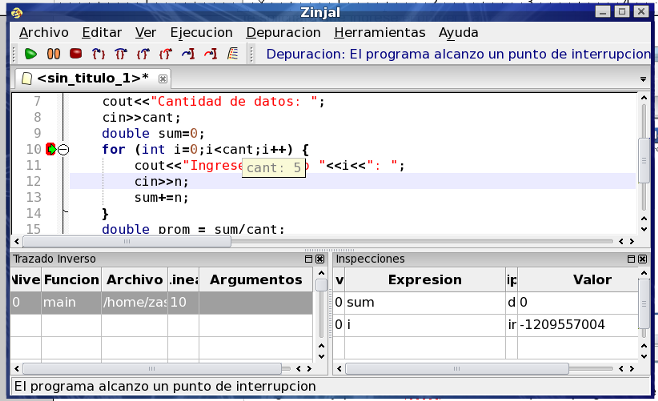

Una vez que se ha detenido el programa, se pueden inspeccionar los contenidos de las variable. Existen dos formas básicas de hacerlo:
- Colocar el puntero del ratón sobre el nombre de la variable (o seleccionar una expresión) y esperar unos segundos (en la figura se muestra el valor de cant).
- Agregar la variable o expresión en la columna Expresión del Panel de Inspecciones (abajo a la izquierda, en la figura se muestran las variables sum e i).

Pruebe ambos métodos posicionando el mouse sobre la variable cant y esperando unos segundos (el foco debe estar en la ventana de ZinjaI y en el panel del código fuente para que ello); y luego ingresando la expresión las expresiones sum e i en el Panel de Inspecciones.
Observe que el programa se detuvo justo antes de comenzar el bucle, por lo que aún no inicializó el contador. A esto se debe el extraño valor de i.
El primer método es más rápido, pero el segundo muestra más información (el tipo, el ambiente, etc.), y permite modificar el valor de una variable haciendo doble click sobre el mismo. Además, las entradas en la tabla de inspecciones permanecen allí cuando avanza el programa, por lo que en la próxima detención se actualizarán mostrando los nuevos valores.
Volver... Continuar...